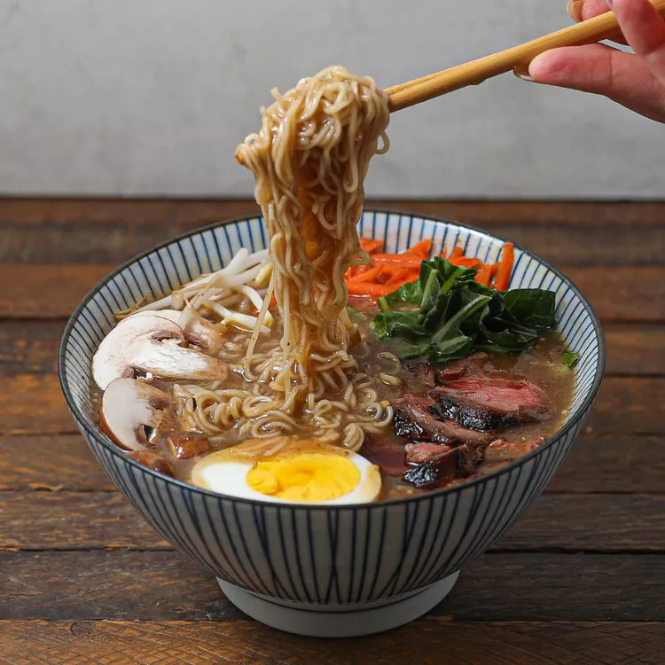

Beef Miso Ramen

Description:
This flavorful bowl of miso ramen is full of delicious flavors that will make your palate sing! If you've been dreaming of Japanese cuisine, this is the perfect meal for you. Add a hard-boiled egg, mushrooms, spicy chili oil, or toppings of your choice.
Ingredients:
- 1 (8 ounce) beef sirloin steak
- ½ cup gluten-free soy sauce (tamari)
- 1 teaspoon coconut oil
- 4 cups beef broth
- 2 teaspoons miso paste
- 1 teaspoon minced garlic
- 1 teaspoon sesame oil
- 2 (3 ounce) packages ramen noodles
- salt and ground black pepper to taste
Steps:
- Combine steak and soy sauce in a plastic container with a lid. For best flavor results, marinate in the refrigerator for 2 hours.
- Remove steak from the marinade and shake off excess. Discard the remaining marinade.
- Heat coconut oil in a skillet over medium-high heat. Add steak and cook until firm and reddish-pink and juicy in the center, 3 to 4 minutes per side. An instant-read thermometer inserted into the center should read 130 degrees F (54 degrees C) for medium-rare. Remove from skillet and allow to rest for 10 minutes.
- Heat coconut oil in a skillet over medium-high heat. Add steak and cook until firm and reddish-pink and juicy in the center, 3 to 4 minutes per side. An instant-read thermometer inserted into the center should read 130 degrees F (54 degrees C) for medium-rare. Remove from skillet and allow to rest for 10 minutes.
- Transfer broth and noodles to 2 bowls. Slice steak and place on top.
Home Page